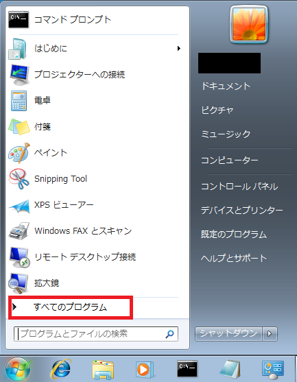
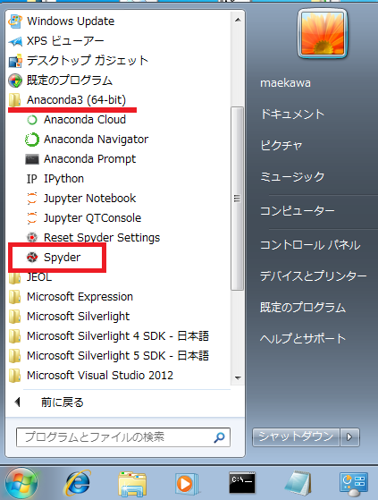
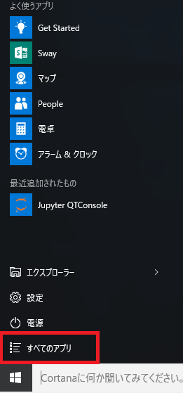
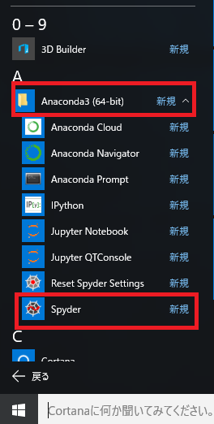
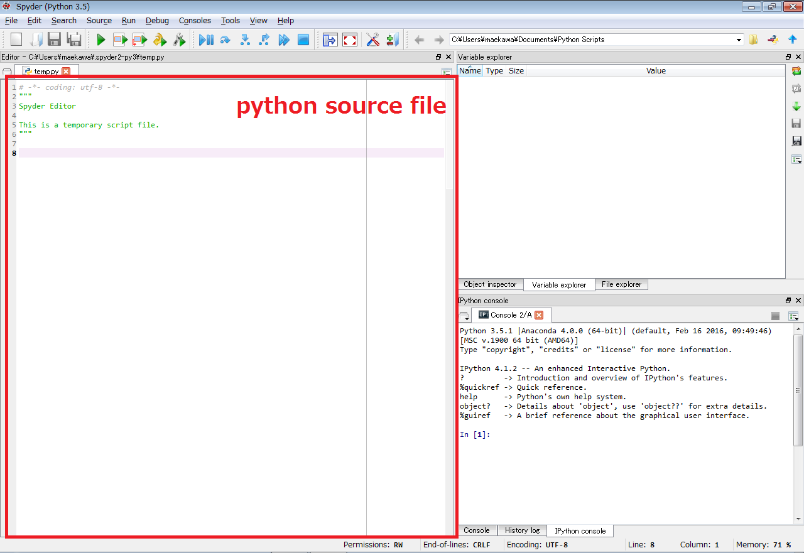
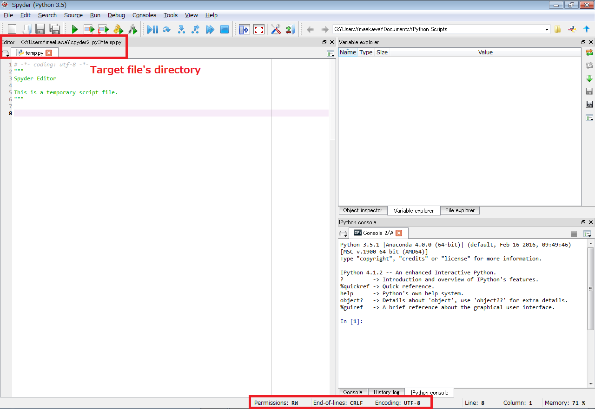
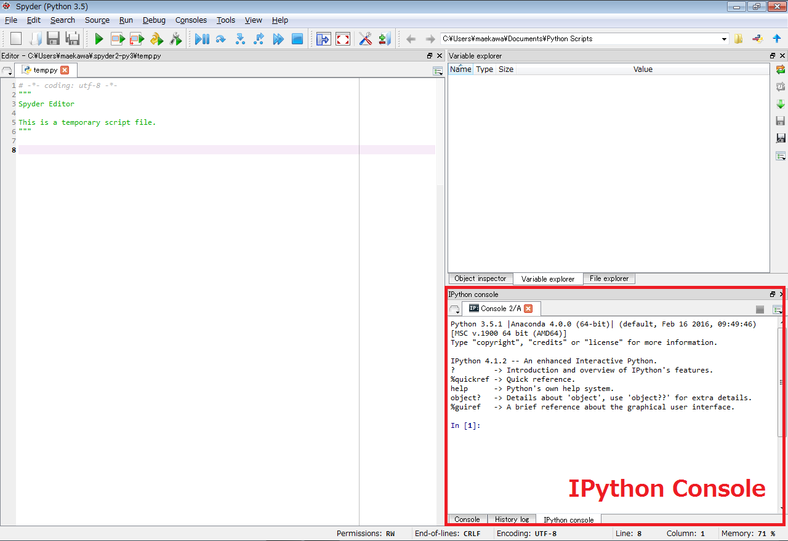

How to Use¶
Tools¶
Spyder¶
Spyder is an integrated development environment, intended to program scientific applications with python. We recommend using spyder as a programming environment using PyJEM.
This page introduces how to start Spyder. The precondition is that Anaconda3 is installed.
Starting method¶
Windows7:
Click [Start]
Click [All Programs]

Click [Anaconda 3 (64-bit)]
ClickSpyder

Windows10:
Click [Start]
Click [All Programs]

Click [Anaconda 3 (64-bit)]
ClickSpyder

About UI¶
When you start Spyder, the following UI will be displayed. Below, since the red frame is SourceFile, you can write python code.

Below, the red frame becomes the Directory of SourceFile.

Below, the red frame becomes the Ipython’s Console. To exit Console, in the Console screen Right click and select [Quit]. To start a new Console, on the Console tab Right-click and select Open a new Console.
